ダイニング
こんにちは✨ 富山県で自然素材の家づくりをしている 「フジ創アイノス」です。 テーマ☆ 「ドラマの中の風景」(おすすめ記事ご紹介) 新しい家を考えるとしたら、その家の中心をどの部屋にしますか？ または、、今の家で、家族の
続きを読む →FUJISOU AINOS JOURNAL
家づくりのこと、暮らしのこと。
日々の想いを、お伝えします。
新しい記事から 6・40ページ
こんにちは✨ 富山県で自然素材の家づくりをしている 「フジ創アイノス」です。 テーマ☆ 「ドラマの中の風景」(おすすめ記事ご紹介) 新しい家を考えるとしたら、その家の中心をどの部屋にしますか？ または、、今の家で、家族の
続きを読む →
こんにちは✨ 富山県で自然素材の家づくりをしている 「フジ創アイノス」です。 ☆テーマ☆(今日の気になる記事) 「囲炉裏大発明」 ・人間は火を使う唯一の動物である。火を扱うことで人間になってきたともいえます。 火との長い
続きを読む →
こんにちは✨ 富山県で自然素材の家づくりをしている 「フジ創アイノス」です。 ・テーマ・ 「絵を飾ること」 インテリアの楽しみのひとつに、リトグラフや絵画を飾ることがあります。 欧米の家では、家族の写真を壁面いっぱい飾っ
続きを読む →
こんにちは✨ 富山県で自然素材の家づくりをしている 「フジ創アイノス」です。 ☆テーマ☆ ・自分の脳に聞いてみる・ 人間の脳は、文字に書かれたものや、相手が発声した言語を発してコミュニケーションをとることや、さまざまなシ
続きを読む →
こんにちは✨ 富山県で自然素材の家づくりをしている 「フジ創アイノス」です。 ・テーマ・ ビバリーヒルズに。。 もし、ビバリーヒルズにマンションが建てばどうなるでしょう・・ もちろん同じマルチファミリー用住宅であるアパー
続きを読む →
こんにちは✨ 富山県で自然素材の家づくりをしている 「フジ創アイノス」です。 ・テーマ・ [建物と土地は一体のもの] その意味では、そもそも不動産に対する評価や考え方から日本とは違います。 日本では、既存住宅の価格を査定
続きを読む →こんにちは✨ 富山県で自然素材の家づくりをしている 「フジ創アイノス」です。 ・テーマ・ 「日本の街づくり」 ・最初にあげられるのは、法制度。 単純に言えば、一戸建ての中にアパート、マンションが建てられないような法律がア
続きを読む →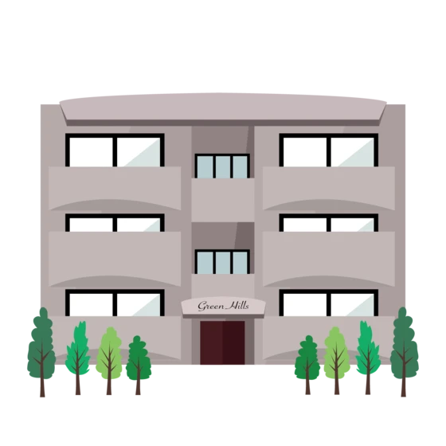
こんにちは✨ 富山県で自然素材の家づくりをしている 「フジ創アイノス」です。 今日は。。 ☆テーマ☆ 「ビバリーヒルズ」 ・日本中の街を見ている感覚では、建てようと思えば不可能はないと思えます。 さらに、もし売り出された
続きを読む →こんにちは✨ 富山県で自然素材の家づくりをしている 「フジ創アイノス」です。 今日は、、 ・テーマ・ 景色をつくる ・欲しかったものをやっと手に入れて、なでる様にして使用していても、いつの間にか新品の時の喜びを忘れて、少
続きを読む →こんにちは✨ 富山県で自然素材の家づくりをしている 「フジ創アイノス」です。 テーマ ・500年前のモダンデザイン・ 。都を離れて、山居を構えた鴨長明の方丈庵には禅に通じる考え方が根底にあり、この世は仮の宿です。 この思
続きを読む →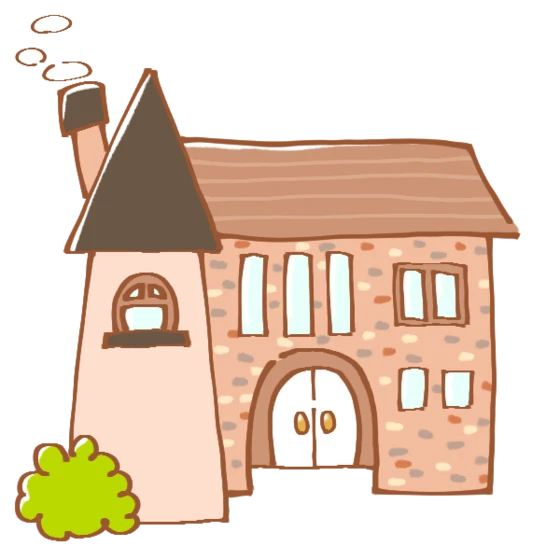
こんにちは✨ 富山県で自然素材の家づくりをしている 「フジ創アイノス」です。 小屋活用術6 テーマ ・未来をつくる吹き抜け・ 小屋裏の家はインテリアにも味わいがあります。 小屋裏部分を１階からの吹き抜けとして利用するので
続きを読む →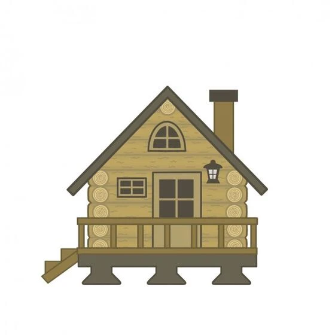
こんにちは✨ 富山県で自然素材の家づくりをしている 「フジ創アイノス」です。 テーマ ・小屋裏の家・ 小屋裏収納だけでなく、小屋裏を活かした家にもまた、魅力があります。 欧米の民家や、日本の民家でも、小屋裏２階建てや、小
続きを読む →こんにちは✨ 富山県で自然素材の家づくりをしている 「フジ創アイノス」です。 テーマ(小屋裏活用術) ・小屋裏活用のテクニック・ 小屋裏を活用するためには、相応の準備が必要。 一般的な住宅では屋根裏の換気を取るために、上
続きを読む →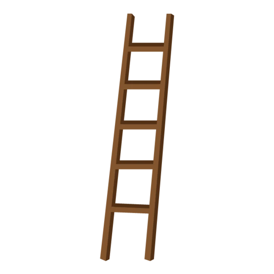
こんにちは✨ 富山県で自然素材の家づくりをしている 「フジ創アイノス」です。 テーマ ・小屋裏活用術3・ 間取りには表せない空間 たとえ子供部屋にしなくても、小屋裏の空間を工夫して活用することがたくさんあります。 さすが
続きを読む →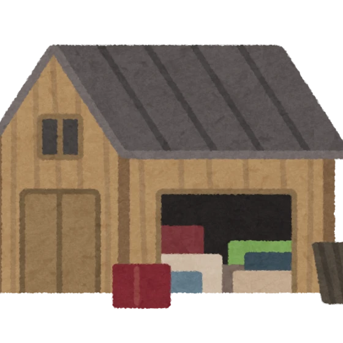
こんにちは✨ 富山県で自然素材の家づくりをしている 「フジ創アイノス」です。 ・テーマ・ ☆小屋裏活用②☆ ・子供の個性を伸ばす空間・ かなり昔ですが、アメリカの高校教師がとても興味のある発表をしました。 「何事も上手に
続きを読む →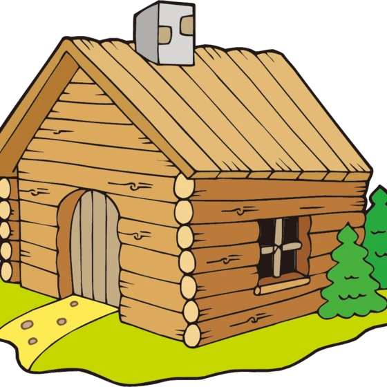
こんにちは✨ 富山県で自然素材の家づくりをしている 「フジ創アイノス」です。 ・テーマ・ ・小屋裏活用・ １．子供部屋のシーン 小さな子供たちも憧れジブリ。 「となりのトトロ」「借りぐらしのアリエッティ」 描写が細やかに
続きを読む →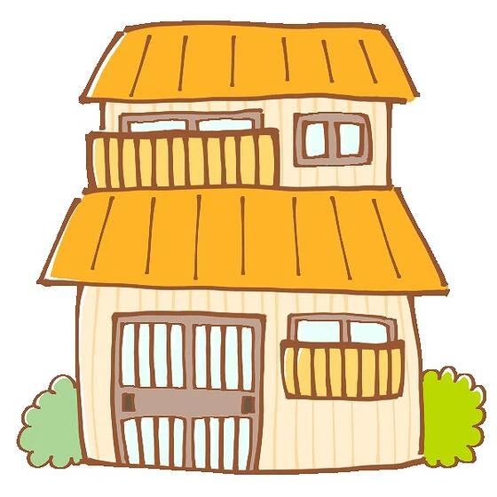
こんにちは✨ 富山県高岡市で自然素材の家づくりをしている 「フジ創アイノス」です。 テーマ ・再生の技術2・ 性能にかかわる共有部を扱うことができないマンションと、戸建て住宅のリノベーションでは大きく異なるポイント。 こ
続きを読む →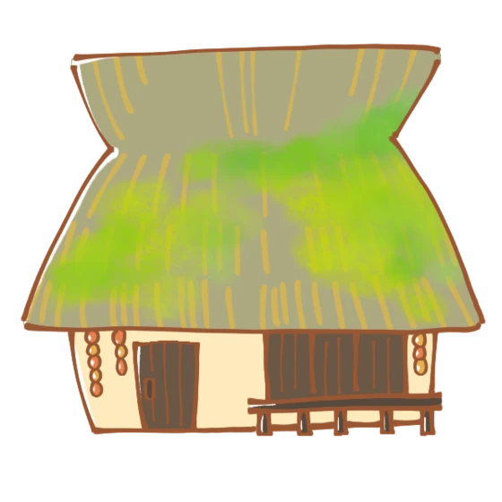
こんにちは✨ 富山県で自然素材の家づくりをしている 「フジ創アイノス」です。 テーマ ・再生の技術・ 古民家再生の事例では、家を再生して残そうとするのは男性よりも女性の方が多いと聞いたことあります。 親や自分が育ってきた
続きを読む →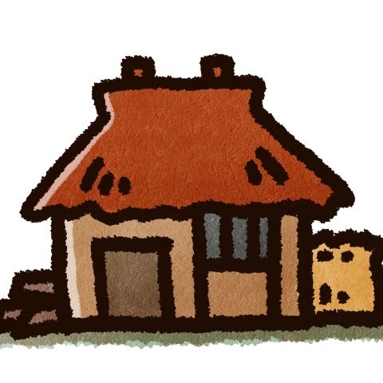
こんにちは✨ 富山県高岡市で自然素材の家づくりをしている 「フジ創アイノス」です。 ・テーマ・ 既存住宅流通の時代 ２０１６年以降、首都マンション市場は、大きな転換を迎えています。 新築の販売戸数よりも中古流通の成約戸数
続きを読む →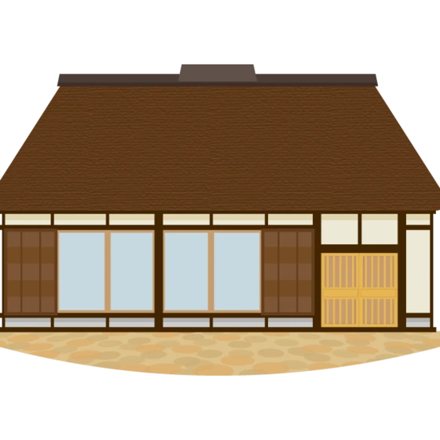
こんにちは✨ 富山県高岡市で自然素材の家づくりをしている 「フジ創アイノス」です 古民家もきれいにリノベできる時代ですね✨ 古民家をお題にして、更新していきます☆ ・古民家改修工事・ 省エネや耐震補強の工事に対して、国の
続きを読む →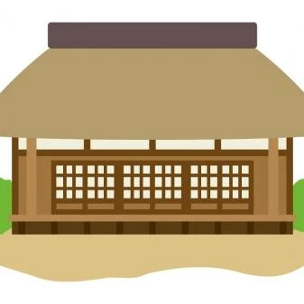
こんにちは✨ 富山県高岡市で自然素材の家づくりをしている 「フジ創アイノス」です。 ・テーマ・ 古民家だからできること。 ・省エネと耐震補強の工事を行えば、設備などの機能をくわえ、新しい暮らしをつくるのはリフォームと大差
続きを読む →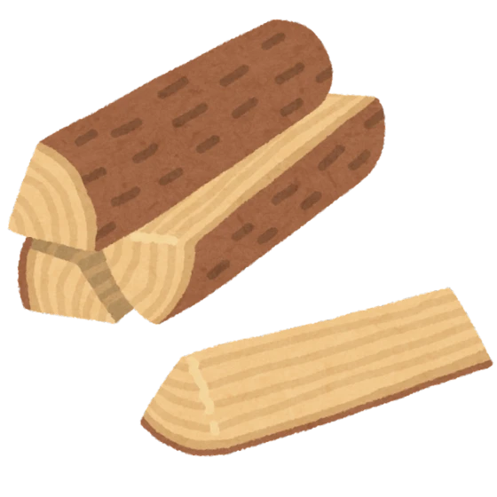
こんにちは✨ 富山県高岡市で自然素材の家づくりをしている 「フジ創アイノス」です。 テーマ ・木材に刻まれた文化・ 木材の加工技術の基本は「きる・わる・さく」。 そして、その加工をより高度化するために刃物が工夫されてきま
続きを読む →こんにちは☆ 富山県で自然素材の家づくりをしている 「フジ創アイノス」です。 最近、いかがお過ごしでしょうか？ 今日は、ガーデンについて更新していきます✨ テーマ ・暮らしを飾るキクの花・ 白、黄色、オレンジ、紫、ピンク
続きを読む →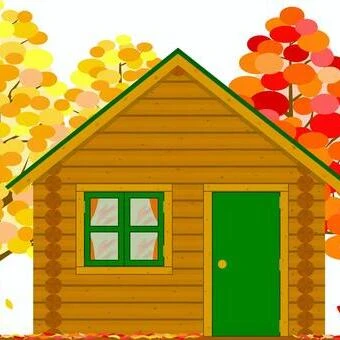
こんにちは✨ 富山県高岡市で自然素材の家づくりをしている 「フジ創アイノス」です。 レジリエンスという題名で更新していきます✨ ・もともとは物理用語である「レジリエンス」という言葉をご存じでしょうか？ 今震災復興や会社イ
続きを読む →